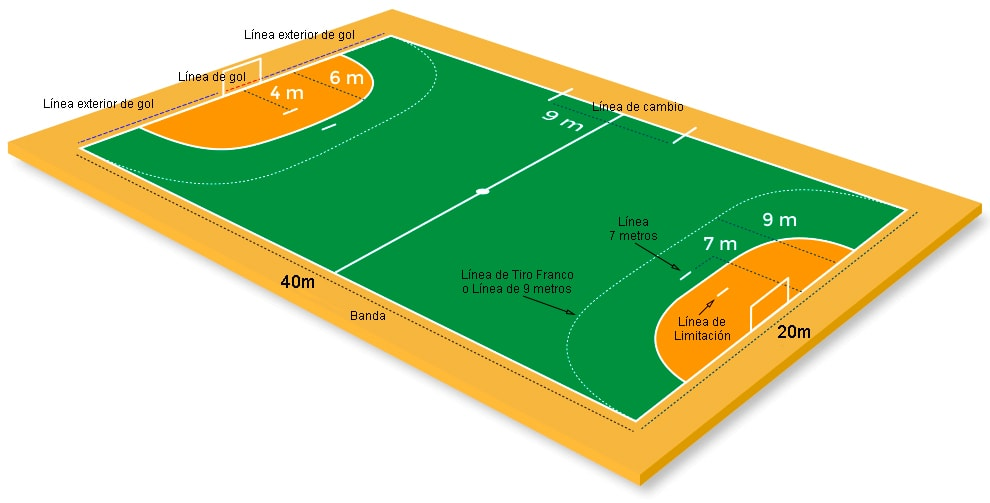

REGLAS
Cada equipo juega con 7 jugadores (6 de campo + 1 portero). El resto de jugadores esperan su turno en el banquillo. Los cambios pueden ser en cualquier momento y no hay limite de cambios. Pueden entrar y salir del campo siempre que el entrenador lo requiera.
El terreno de juego es rectangular (40x20m). Con una portería en cada fondo (3x2m), y un área de 6 metros hasta la portería.
Está prohibido tocar el balón por debajo de las rodillas (excepto el portero en su propia área).
No se puede pisar el área del portero (ni atacante ni defensores).
Al desplazarse con el balón, según las reglas del balonmano no se puede dar más de 3 pasos sin botar, pasar o tirar.En caso de falta en una ocasión de tiro delante del portero, se sanciona con 7 metros o lanzamiento de penalti.
En caso de falta en una ocasión de tiro delante del portero, se sanciona con 7 metros o lanzamiento de penalti.
También se sanciona con penalti, si un jugador defiende pisando su propia área.
Cuando exista una falta cerca del área se sanciona con tiro franco.
El saque de banda se hace pisando la línea de fuera con un pie.
La duración de un partido es de 60 minutos. Dos tiempos o partes de 30 minutos cada una. En caso de prórroga se juegan dos partes de 5 minutos cada una. En caso de empate se jugaría otra prórroga. Al tercer empate se decide la victoria por penaltis.
medidas de una cancha de balonmano
El campo de juego es un rectángulo de dimensiones 40 m x 20 m.
